DOE shares the results of completed GATEWAY demonstration projects, publishing detailed reports that include analysis of data collected, projected energy savings, economic analyses, and user feedback. Report briefs summarize key findings in a quick-scan format. Both the reports and briefs are available as Adobe Acrobat PDFs.
Completed Indoor Projects
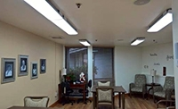Tuning the Light in Senior Care
The GATEWAY program documented the performance of tunable-white LED lighting systems installed in several spaces within the ACC Care Center, a senior-care facility in Sacramento, CA. The project results included energy savings and improved lighting quality, as well as other possible health-related benefits that may have been attributable, at least in part, to the lighting changes. (August 2016)
ACC Care Center Report
ACC Care Center Report Brief
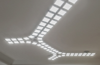OLED Lighting in the Offices of Aurora Lighting Design, Inc.
At the offices of Aurora Lighting Design, Inc., in Grayslake, IL, the GATEWAY program conducted its first investigation involving OLED lighting. The project experienced several challenges, but also highlighted a number of promising attributes – which indicate that with continued improvements in efficacy, longevity, size, and flexibility, OLEDs could provide a new tool for creative and effective lighting. (March 2016)
Aurora OLED Report
Aurora OLED Report Brief
See also OLED Lighting Products: Capabilities, Challenges, Potential
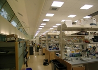LED Retrofit Project: Princeton, New Jersey
At Princeton University’s Carl Icahn Laboratory, DOE’s Commercial Buildings Integration Program documented the implementation of LED retrofit products for recessed troffers, linear cove lighting, and downlights – as part of Princeton’s first building-wide interior LED project. The conversion to LED enables more extensive use of lighting controls to tailor the lighting to the task and limit the operating hours based on occupancy, and the estimated energy savings including controls is 62% compared to the incumbent system. (November 2015)
Princeton Icahn Laboratory Report
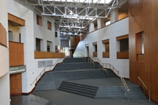
LED Wall Washer Retrofit: College Park, Maryland
At the University of Maryland, the GATEWAY program looked at LED wall washer options for a demonstration at the Clarice Smith Performing Arts Center. Two products were initially mocked up and evaluated – a complete LED wall washer and a retrofit with an LED module. The LED modules eventually replaced 87 halogen lamps in existing wall washers, resulting in a significant reduction of maintenance and energy costs while retaining the quality of light. (July 2015)
University of Maryland Report
University of Maryland Report Brief

LED Downlight Replacement Lamps: Gig Harbor, Washington
At St. Anthony Hospital, DOE's Better Buildings Alliance conducted a demonstration of LED replacement lamps installed in existing CFL downlight sockets throughout the facility. The retrofit resulted in substantial energy savings, along with improvements in lighting color quality and the expectation of improved long-term lighting system performance leading to reduced ongoing maintenance costs. (May 2015)
St. Anthony Hospital Report

LED Recessed Downlights: Atlanta, Georgia
At the Alston & Bird Law Offices, DOE's Better Buildings Alliance conducted a demonstration of Next Generation LuminairesTM- recognized LED downlight luminaires installed throughout 16 floors of a high-rise office building as part of a larger remodel project. The remodel reduced energy use by 22-37% compared to baseline, primarily because of the lighting system. The LED downlights draw approximately half the wattage of similar CFL downlights, without factoring in potential savings from dimming and controls. (March 2015)
Alston & Bird Law Offices Report
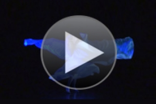Architectural and Theatrical Lighting: Gainesville, Florida
At the University of Florida in Gainesville, the GATEWAY program evaluated LED architectural and theatrical lighting in four academic/performance-related spaces within the Nadine McGuire Theatre + Dance Pavilion. Due to a wise choice of products and luminaire light distributions, the change brought significant quality improvements including improved controllability and color. (July 2014)
University of Florida Report
University of Florida Report Brief
LED Recessed Downlights: Columbus, Ohio
At the Hilton Columbus Downtown hotel in Ohio, DOE's Better Buildings Alliance conducted a demonstration of Next Generation LuminairesTM-winning downlights installed in all guest rooms and suites prior to the hotel's 2012 opening. After a post-occupancy assessment, the LED downlights not only provided the aesthetic appearance and dimming functionality desired, but also provided 50% energy savings relative to a comparable CFL downlight and enabled the lighting power to be more than 20% below that allowed by code. (June 2014)
Hilton Columbus Downtown Case Study
Hilton Columbus Downtown Report
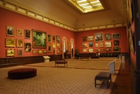LED Retrofit Lamps: Washington, DC
In several galleries at the Smithsonian American Art Museum, halogen and incandescent lighting was replaced with LED PAR 30, PAR 38, and MR16 lamps. Although there were performance issues and challenges affecting compatibility with the museum's track fixtures, electricity use reductions were notable—recovering the cost of the LEDs in 16 months of operation through energy savings alone. (June 2012)
Smithsonian American Art Museum Report
Smithsonian American Art Museum Video
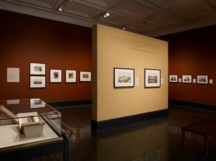LED Retrofit Lamps: Malibu, California
At the J. Paul Getty Museum in Malibu, 12W LED PAR 38 lamps replaced 60W halogen PAR 38 flood lamps on a one-for-one basis for a special photography exhibition. The LED lamps resulted in energy savings approaching 83 percent compared to the traditional halogen system; simple payback was estimated to occur between years two and three. (March 2012)
Getty Museum Report
LED Retrofit Lamps: Eugene, Oregon
In the Jordan Schnitzer Museum of Art in Eugene, 90W PAR38 130V narrow flood lamps used for accent lighting were replaced with 12W LED PAR38 replacement lamps for a special exhibition, and the museum also staged a side-by-side comparison of three different LED PAR38 replacement lamps against their standard halogen lamp. The LED system lighting the exhibition showed a lower present value life-cycle cost, using 14% of the energy and having a life 10 times longer, than the halogen system. (September 2011)
Jordan Schnitzer Museum Report
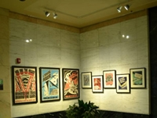LED Retrofit Lamps: Portland, Oregon
In the Bonneville Power Administration headquarters building in Portland, 15W and 23W reflectorized compact fluorescent (CFL) track lights used to illuminate artwork were replaced with 12W LED lamps. Although the study did not show rapid payback on the LED installation compared to the CFL products, color quality and power quality improved with the LED lamps, and the narrower light distribution of the LED product more effectively concentrated the lumens on the artwork. (July 2011)
Bonneville Power Administration Report
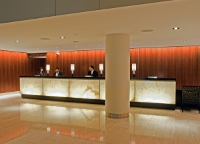LED Retrofit Lamps: San Francisco, California
At the InterContinental Hotel in San Francisco, halogen wall-grazing luminaires, track lights, and recessed downlights in the lobby and other common areas were retrofitted with 6W LED MR-16 or 11W PAR30 replacement lamps. The LED lamps resulted in 70% energy savings compared to the halogen lamps, with an estimated payback of a little over one year. (November 2010—Updated to include results of 9000 hour testing, January 2012)
InterContinental Hotel Report
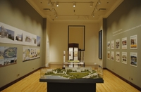LED Museum Accent Lighting: Chicago, Illinois
At Chicago's Field Museum of Natural History, 32 halogen track luminaires used to light an enclosed gallery exhibit were replaced with an LED system using 26 track fixtures. The LED system resulted in 63% energy savings compared to the halogen system, while achieving a simple payback of roughly 3 years. Because the LED luminaires used do not emit energy in the infrared or ultraviolet regions of the electromagnetic spectrum, they are also expected to be less detrimental to some museum artifacts. (November 2010)
Field Museum Report
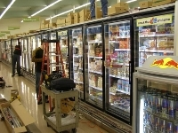LED Freezer Case Lighting: Albertsons Grocery
At an Albertsons Grocery in Eugene, Oregon, upright freezer cases were retrofitted with LED striplights combined with occupancy sensors, and compared against standard fluorescent lighting on the opposite side of the aisle. Calculated payback periods approached five years from estimated energy and maintenance savings for a typical 5-door case. (October 2009)
Freezer Case Report
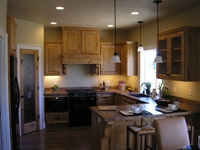LED Residential Downlights and Undercabinet Lights: 2008 Eugene Tour of Homes
LED downlights represent one of the most promising applications for SSL technology and significant energy savings. This project studied the installation of LED downlights and undercabinet lights in two "green" showcase homes in Eugene, Oregon. LED downlights are emerging as a viable energy-saving alternative to incandescent and fluorescent downlights. (October 2008)
Eugene Report